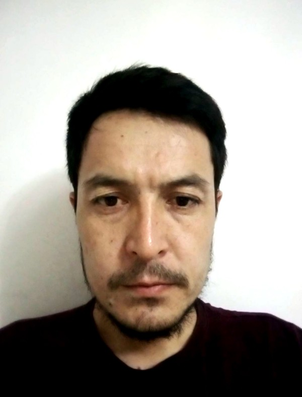

7 years building APIs that stay up. Django, DRF, FastAPI, WebSocket, Celery — based in Tashkent, working with teams anywhere.

I'm a backend-focused Python developer with ~7 years of experience, based in Tashkent, Uzbekistan. Most of my work lives in Django / DRF and FastAPI — auth, background jobs, real-time features over WebSocket, and integrations that actually get used, like Telegram bots wired into CRMs and payment flows. Lately I've been building two things end-to-end on my own: a multi-tenant retail platform with face recognition, and a telemedicine API — both from schema to deployment.
Multi-tenant retail platform with face-recognition-based customer check-in, an RFM-style weighted discount engine, QR code generation, and a Telegram bot that handles self-registration end to end.
Telemedicine REST API built from scratch across 12 Django apps — patients, doctors, pharmacy, consultations, prescriptions, payments, chat, and analytics — with FastAPI-powered services, real-time WebSocket messaging, and an AI Telegram bot, on split settings and a Jazzmin admin.
A compact Python tool that measures connection speed — built as a technical test task and shipped end to end, including first-time setup of Git authentication via personal access tokens.
Intercity taxi service connecting passengers between cities, with real-time ride tracking over WebSocket and background job processing for matching and notifications.
Cargo and freight-matching platform for intercity and Central Asia routes — connecting shippers who need cargo moved with carriers who have space, in real time.
A directory site for finding clinics, doctors, and pharmacies — with price lookups and online appointment booking.
A full website built with a Django backend and a hand-crafted HTML/CSS/JS frontend.
Designed and built both platforms solo, from data models to deployment prep, while job searching.
Multi-role dashboards, payment-confirmation notifications, debt calculation logic, and admin-only logging channels for internal retail/distribution tools.
Django, DRF and FastAPI services with a recurring focus on real-time features and Telegram-based notification systems.